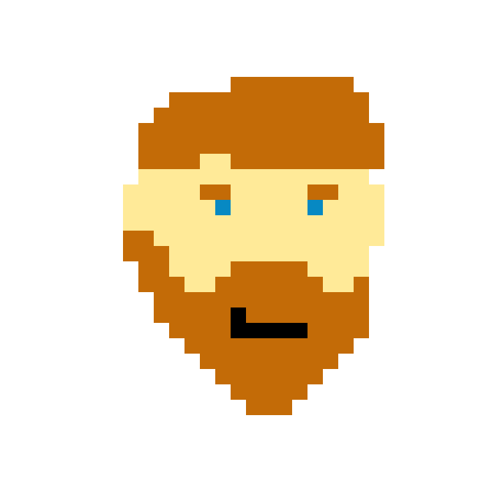

Presentación
Gonzalo Ezequiel Penna
Front End Jr.
- Nombre:Gonzalo Ezequiel Penna
- Fecha de nacimiento: 22/06/1994
- Dirección: Francia 3441,Vicente Lopez
- Email: pennagonzalo@gmail.com
- Telefono: +54 9 11 6059 2206
- skype: pennagonzalo@gmail.com
-
mi perfil:
IN
- mis repositorios: GIT
¿Que puedo aportar a un grupo de trabajo?
Si bien carezco de experiencia,creo que puedo llegar a ser un recurso valioso porque:
- Puedo generar buenos ambitos laborales
- Soy flexible y puedo adaptarme a los contratiempos que se generen
- Me considero un creador de soluciones
- No me averguenza mi ignorancia y siempre estoy dispuesto a aprender
Estudios:
- Secundario:Bachiller en la EES N°5 "Doctor Nicolás Avellaneda" (Mar del Plata).
- Terciario: Tecnico Universitario en Sistemas (UTN). -En Curso-
- Java:introduccion a java/desarrollo android I (IAC) Prof: Carlos Arroyo.
- Desarrollo web (acamica).
- Desarrollo front end(acamica).
Los Lenguajes De programación que manejo:
- Java (Intermedio)
- Html (Intermedio)
- Python (Principiante)
- CSS (Principiante)
- C/C++ (Principiante)
- JavaScript (Principiante)
Mis pasatiempos fuera de la programación
- Ajedrecista Amateur
- Escritor
- Lectura (Poesia,Literatura Fantastica,Filosofia)
- Jugador de truco
- Enfermo del Flipper